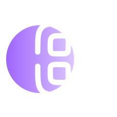
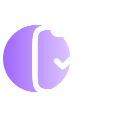
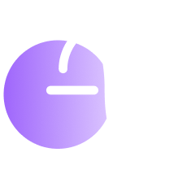

I help businesses assess, streamline, and digitize their operations through tailored technology strategies and enterprise solutions. From business process analysis to ERP, WMS, and TMS selection and implementation planning, I bridge the gap between operational needs and technology. My goal is to make business processes more efficient, connected, and scalable.

Understand existing operations, identify inefficiencies, uncover bottlenecks, and evaluate opportunities for digitization and process improvement. I analyze how business processes work in practice to identify where technology can deliver meaningful operational value.

Evaluate business requirements and define suitable ERP, Warehouse Management (WMS), and Transportation Management (TMS) solutions aligned with operational needs. The focus is on selecting the right systems, defining functional requirements, and ensuring technology supports business objectives.

Develop actionable recommendations, system requirements, and implementation roadmaps to guide businesses through their digital transformation. Establish clear priorities, define improvement opportunities, and create a structured path toward more efficient and connected operations.
Every successful digital transformation starts with understanding the business. My consulting approach combines operational assessment, process mapping, and technology evaluation to establish a clear picture of where improvements are needed. Through structured analysis, I identify existing workflow inefficiencies, operational bottlenecks, integration challenges, and opportunities for automation. These findings help define the functional and technical requirements for suitable enterprise solutions, including ERP, WMS, and TMS platforms. The outcome is a structured assessment covering existing processes, identified improvement opportunities, system requirements, and recommended solutions, accompanied by a practical roadmap to support implementation and long-term operational improvement. My objective is to help businesses make informed technology decisions, align digital investments with operational goals, and build a solid foundation for sustainable digital transformation.